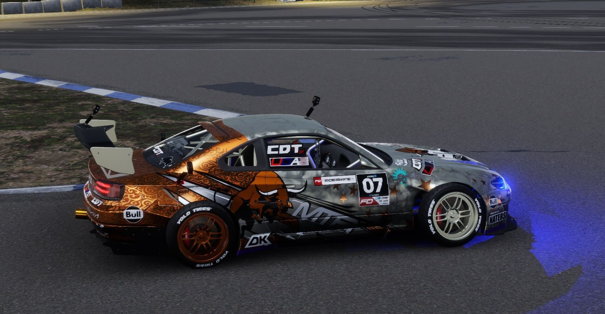

Helpful Tips
Stiffness
Alignment
Wheels
Brakes
Engine
Transmission
CarX Damper Calculator by SideSwipe and ChatGPT
Suspended Mass (kg):
Front Spring Constant (kN/m):
Rear Spring Constant (kN/m):
Calculate

Open for suggestions
Close